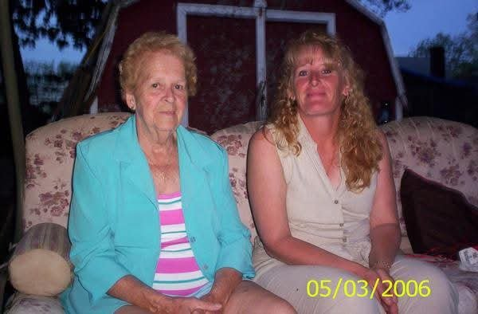
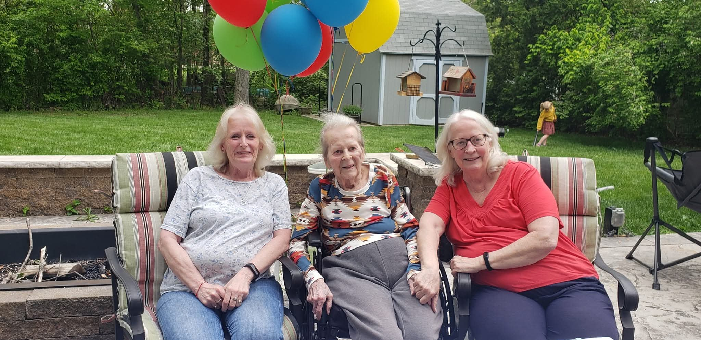
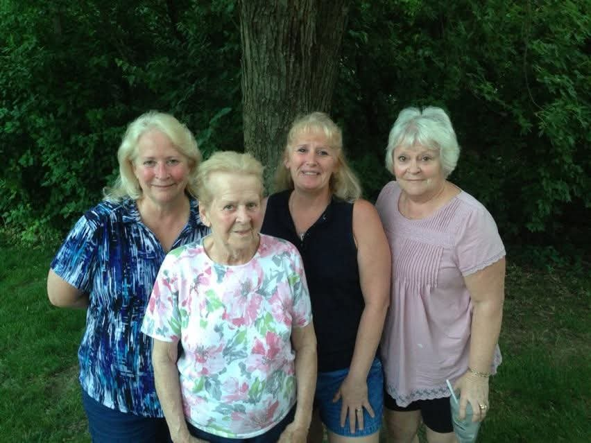
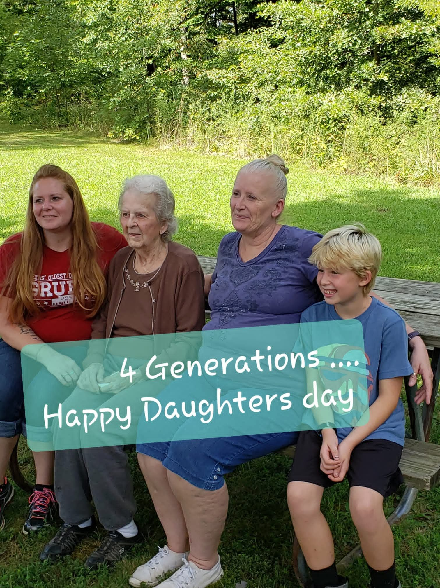

Doris (Doughman) McShane
Dates not yet recorded
Quick Facts
Immediate Family
Spouses
Siblings
- Charles Virgil Doughman (1921–2001)
- Alice Mae (Doughman) Montgomery (about 1923 – 12 May 2015)
- Donald Edward Doughman (1926–2000)
- Dorthy Jean (Doughman) Campbell (3 May 1930 – 2 October 2015)
- Howard Eugene Doughman (1936–2018)
- Thelma Doughman (age 1 in 1940)
- Peggy (Doughman) Campbell
On Family Tree Sites
Couple Folder
Life Timeline
April 1940
Counted with her parents, Virgil and Maggie Doughman, and her brothers and sisters in Wayne Township, Clermont County, Ohio
May 1941
Her father died
1971
Daughter Susan graduated from Norwood High School
1983
Daughter Trish graduated from Norwood High School
May 2015
Named as a surviving sister in Alice Mae Montgomery's obituary
October 2015
Named as a surviving sister in her twin sister Dorthy's obituary
August 2018
Named as a surviving sister in Howard Doughman's obituary
Life Story
Doris Doughman married James Earl McShane, and they raised their daughters Susan and Trish in Norwood, Ohio. She outlived her husband. She grew up in Wayne Township, Clermont County, the daughter of Virgil W. Doughman and Maggie (Hill) Doughman, one of at least eight children. Her father, a World War I veteran, died in 1941. Her sister Alice's 2015 obituary and her brother Howard's 2018 obituary both name her as their sister Doris McShane. Her twin sister Dorthy married Shafter Campbell in July 1948, and her youngest sister Peggy married Shafter's brother Lewis Campbell in June 1955.
Photo Gallery




Sources and Evidence
- Geni profiles of James Earl McShane (6000000153485417856), Doris McShane (Doughman) (6000000153229272822), and their daughters Trish Felock (McShane) and Susan Overbeck (McShane), a managed family tree, viewed 11 November 2026.
- Norwood High School, Norwood, Ohio, alumni listings: Susan Overbeck (maiden name McShane), Class of 1971; Trish Felock (maiden name McShane), Class of 1983 (alumniclass.com).
- Obituary of Alice Mae (Doughman) Montgomery, died 12 May 2015, Frederick Funeral Home, Cincinnati: sister of Donald, Charles, Howard, Doris McShane, and Dorothy Campbell.
- Obituary of Howard Eugene Doughman (28 November 1936 – 27 August 2018), Evans Funeral Home: "the son of Virgil and Maggie (nee Hill) Doughman"; survived by two sisters, one of them Doris McShane.
- 1940 U.S. census, Wayne Township, Clermont County, Ohio: Virgil 42, Maggie 37, Charles 18, Alice Mae 16, Donald 13, Doris 9, Dorothy 9, Howard 3, and Thelma 1.
- Find a Grave memorial 45758707, Virgil W. Doughman (27 September 1898 – 24 May 1941), West Woodville Cemetery; Wagoner, 147th Infantry, 37th Division, World War I.
- Find a Grave memorial 153216615, Maggie (Hill) Doughman (12 November 1902 – 23 June 1990), West Woodville Cemetery.
- Obituary of Dorthy Jean (Doughman) Campbell (3 May 1930 – 2 October 2015), News Journal, published 5–6 October 2015: born to Virgil W. and Maggie (nee Hill) Doughman; survived by sisters Doris McShane, Howard Doughman and Peggy Campbell; interment Woodville Cemetery.
- Obituary of Lewis Campbell (8 August 1933 – 17 February 2006), Blanchester, Ohio: his wife Peggy Doughman Campbell, whom he married 18 June 1955; son of Asberry and Charlotte Strong Campbell.
- West Woodville Cemetery transcription, Warren County, Ohio: Dorthy Campbell (nee Doughman), 3 May 1930, married 17 July 1948 to Shafter Campbell, daughters Deborah, Denise; Lewis Campbell, 8 August 1933 – 17 February 2006.
- Social Security Death Master File: James Earl McShane, born 31 August 1919, died 15 January 1996, last residence Norwood, Ohio.
Research Notes and Open Questions
Additional Quick-Fact Details
- Maiden name: Doughman
- Lived: Norwood, Ohio
- She may be living, so her birth date is kept off this page. Her twin sister Dorthy was born 3 May 1930; Doris's own birth date stays off the page until her living status is confirmed.
- Leads: the Hamilton County McShane–Doughman marriage license (about 1948–52); the 1950 census; Peggy Campbell's birth date; Thelma Doughman's married name and later life.
DNA
No DNA matches linked yet.
Family Notes
No family-notes link is listed on this profile.
Profile history: Created 11 November 2026. Updated 15 November 2026: the two younger sisters named (Thelma, Peggy); Dorthy's dates and marriage added; "outlived her husband" upgraded to .